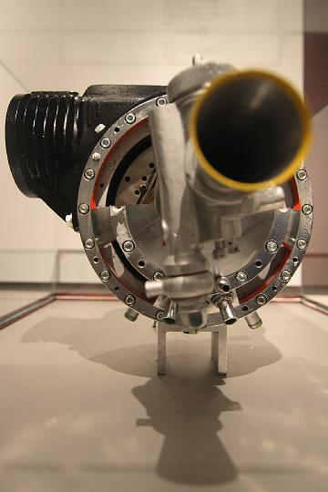

|
|  |
|
| ExkursionWS0809 13 |
| Bild | 1 | 2 | 3 | 4 | 5 | 6 | 7 | 8 | 9 | 10 | 11 | 12 | 13 | 14 | 15 | 16 | 17 | 18 | 19 | 20 | 21 | 22 | 23 | 24 | > | » |
| KAMERA: Canon EOS 400D DIGITAL | DATUM: 12.12.08 11:49 | ISO-EINSTELLUNG: 400 | BELICHTUNGSDAUER: 1/30s | ÖFFNUNG: 2.8 | BRENNWEITE: 15.0mm (=24mm) |
| Anzahl Bilder: 98 | Letzte Aktualisierung: 21.12.08 17:24 | Erzeugt von JAlbum 7.3 & Chameleon | Hilfe |